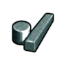
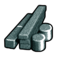
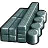
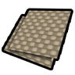
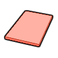
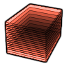

太空Vile代钢级·太空·金刚砂Carborundum
代钢级可塑成品 944 件:家具建筑651 · 防具142 · 穿戴件40 · 近战工具96 · 远程武器7 · 其它8
金属全谱469 + 常规硬性件328 + 重机电(舱体/发电机/扫描仪)143 + 耐腐蚀设备4
顶替 整档替到 代钢级·中世纪·青铜(940 件基准,含其下全部金属);比钢 +4/−1 件 —— 做不了 无菌瓦屋顶;钢做不了它能做 化学工作站、水冷装置…
生效 Things/Item/Material/Carborundum (255,255,255)
aHSK修复整合bHSK修复整合 cHSK修复整合
cHSK修复整合同路径未生效(被覆盖)

aVile's Materials Science
bVile's Materials Science
cVile's Materials ScienceThings/Item/Material/Carborundum StackCount (255,255,255)(83,112,106)被1条配方消耗另有 1 套同名贴图未生效
护甲 1.70/1.60/0.14 利钝 1.34/1.29 价值 22 质量 0.30 Bulk 0.35
stuff CorrosionResistant, LightMaterial, Metallic, RuggedMetallic, StrongMetallic
HSK USLDBar, LightBar
产自 Make Carborundum x35(电弧熔炉/Metal processing V)
源 Vile's Materials Science
Alloys_HighTech.xml
石化工业·后期Vile本地补丁×1强化工程级·石化工业·聚碳酸酯Polycarbonate
强化工程级可塑成品 588 件:家具建筑391 · 防具109 · 穿戴件21 · 近战工具54 · 远程武器7 · 其它6
常规硬性件330 + 重机电(舱体/发电机/扫描仪)143 + 轻量塑料件81 + 透明件(窗/门/天窗)30
vs 塑料多 140 件(破墙斧、手工装配台…);比钢少 373 件 —— 如 美狐动力爪、盔甲架… 都选不到它
生效 Things/Item/Material/PolycarbonateRed

aHSK修复整合 bHSK修复整合
bHSK修复整合 cHSK修复整合
cHSK修复整合同路径未生效(被覆盖)

aVile's Materials SciencebVile's Materials Science
cVile's Materials ScienceThings/Item/Material/PolycarbonateRed StackCount RGBA(255,85,50,220)被1条配方消耗另有 1 套同名贴图未生效
护甲 1.05/1.60/0.11 利钝 0.90/1.40 价值 10 质量 0.25 Bulk 0.35
stuff CorrosionResistant, Glass, LightMaterial, Plastic, RuggedMetallic, StrongMetallic
HSK Plastics, LightBar, INSBar, GlassCat
产自 Make Polycarbonate Plastic x15(石油化工装置/Petrochemistry III)
源 Vile's Materials Science
Alloys_Industrial_Composites.xml